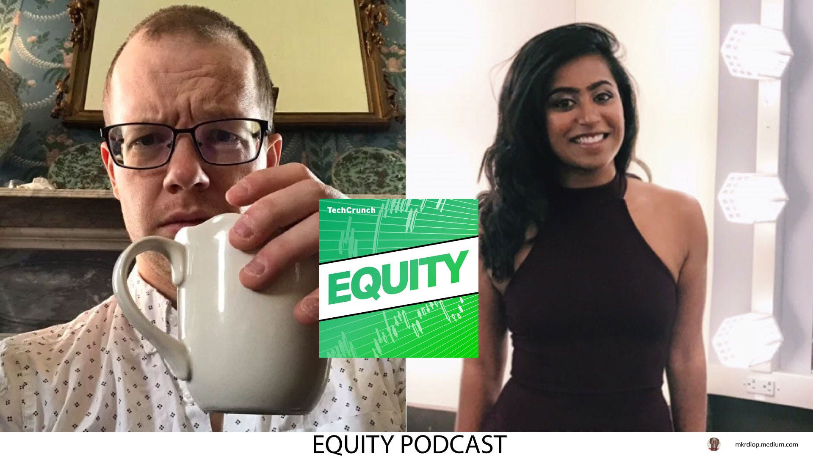

Listen to Alex and Natacha


Distance has been disrupted by the internet that’s what good ideas and solutions like EquityPod show us. Today you almost don't need to be in the bay area to feel and taste what happening in the valley? what’s hot? what’s trendy? What’s investable? what’s declining? what’s starting up? it’s like this part of the world is all about trends and innovations done by passionate creative tech people.
Equitypod, the podcast animated by Alex and Natacha is part of those ideas, solutions, platforms, products, and services that have disrupted the effect of the distance. Because listening to Equity pod right now wherever you are let you know all that’s happing in silicon valley when it’s about tech entrepreneurship and investing. That’s what I am doing every week, listening to equitypod carefully and getting this news and insights that Alex and Natacha, and their teammates are foraging and delivering to us because they know that we matter more than them and our commitment to follow their work should reflect the care and effort they spend to get us informed.
But Alex and Natacha are not the same as these couples that are the object of these experiments about publishing and gaming even if I should tell you clearly that this couple has provided me a bunch of useful insights that are still useful to these two startup ventures that I am experimenting with.
Equitypod is part of TechCrunch which you may know as a media company focused on news about the tech industry. I am myself a reader of Techcrunch and advice you to read often TechCrunch because it helps you see what matters now in the tech industry.
As a fan listener and fan reader of EquityPod and Techcrunch, I have written some short articles about these two good sources of tech industry information. Like these articles below
PS: this is a muted version of the experiment of publishing articles about couples because Alex and Natacha are colleagues and I hope this article will make them work better together and make you care about their works.